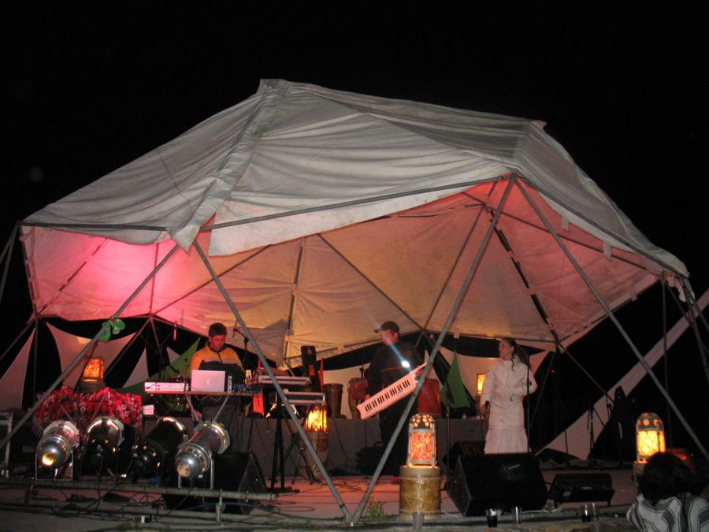

Earthdance sits out Sydney for 2009



The global party for peace Earthdance will be returning to Melbourne this year, but we’d yet to hear word on whether Sydney would be getting another chance to help the world unite through the global language of music, art and peace. Sadly this year it is not to be, as the organisers have confirmed they’ll be sitting it for 2009.
“A lot of people have been asking about Earthdance 2009. For those of you who don’t yet know, the Sydney Earthdance Music Festival for peace is taking a break this year. Last year’s Earthdance suffered significant financial losses due to authorities shutting down Prince Alfred Park three hours early owing to capacity and crowd safety issues,” the Earthdance team told ITM. “Because of the financial burden incurred we have taken some time off but are already focusing our attention on Earthdance 2010, which we hope will return to the Earthdance roots and recapture the spirit that gives the event such a unique place in the community.”
The 2010 event will see the team striving to recapture that special essence that has made the parties so memorable in the past. “Earthdance has always been a music festival for peace and we feel the message may have been undermined in recent times, so we would like people to offer suggestions for Earthdance 2010. Should we continue in the city or opt for a bush camping experience? Should the event be ticketed or free?” the organisers have asked.
Want to have your say? Check out www.earthdance.org.au.